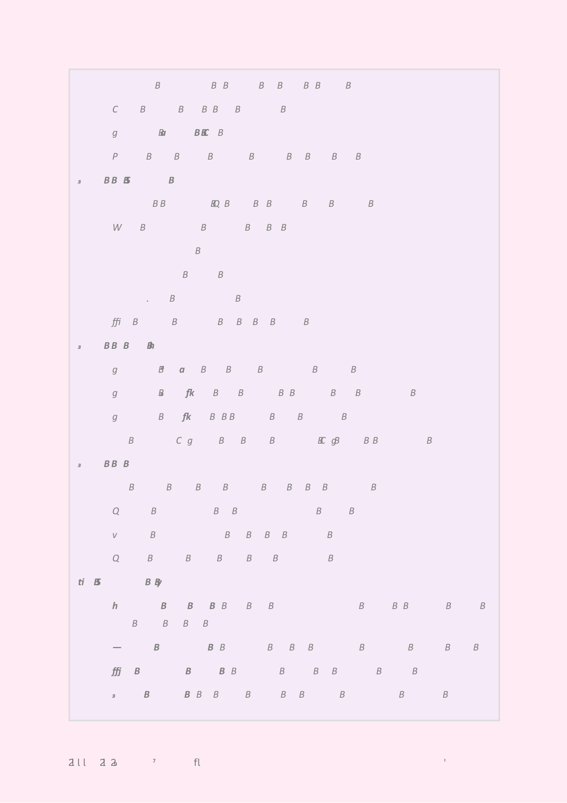
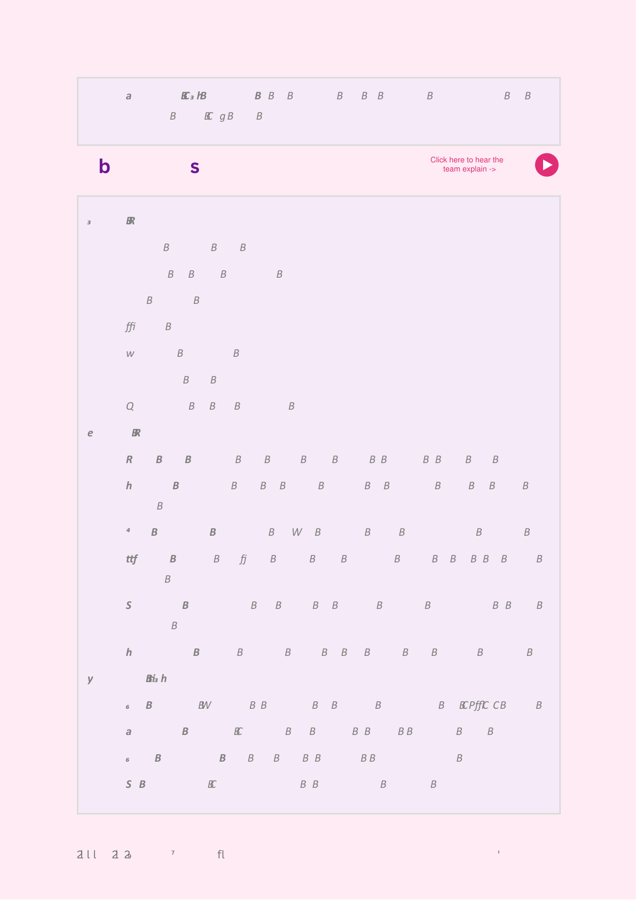

← All sections
Feasibility & Implementation Plan
Section 4 / 7
🔊
Hear the team explain this section


×
Section 4 — Feasibility & Implementation Plan
Tap “Hear the team” or press play
▶
0:00 / --:--
🔊